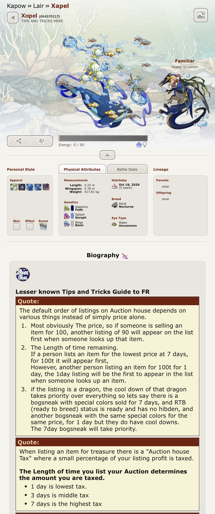

I've technically already sunk my teeth into HTMLCSS-type websites before, but since I haven't really thought about it since February of last year (getting carried away with other bigger projects arguably) I've kind of lost my touch to some degree. Like, if you don't use it you lose it, which is pretty true for me because I am extremely forgetful and sleepy most of the time.
One thing about Markdown though is that I get a bit confused when trying to use certain commands. I'm more comfortable with the HTML style of formatting, but I wasn't able to get the Markdown method of hyperlinking to work on my main page, actually (if you're observing README.md). I had to go back to the HTML hyperlinking method (using a href="...") and I'm not too sure if this is an issue on my part or just a "thing" in the text editor. Either way the link is a hyperlink which is the bulk of what I care about (<- shameless victim of spaghetti coding projects with the end goal of cohering) I also couldn't quite figure out how to path to a version of my journal file that actually displays properly
I'm also not really big into CSS when it comes to simple text-based websites because that's where you start to lose me a little bit. I really like element containers however. And nice hex codes (I use the Coolors website to get nice palettes since colour theory isn't exactly my forte) I remember when I first started messing with HTMLCSS Markdown my favorite stuff was jazzing up my pages with image inserts, or, more recently, vector icons (my portfolio website borrows some from the Fontawesome style sheet.)
^ On Markdown specifically, I used to be really big into the browser game Flight Rising (it's similar to Neopets if you're more familiar with that one), which is essentially a game in which you maintain a clan of dragons. Each individual dragon can have its own modified profile, like a cool background or a handful of accessories, but the relevant portion here is that every dragon can also have its own text description contained inside of a description box below. The dragon descriptions use Markdown for formatting, which I kind of forced myself to learn so I could make my stuff look cool.

^ Example of a dragon page on Flight RisingI like P5's Javascript library. I've always enjoyed just making weird stuff using their shapes, but since it's been a hot minute I've kind of lost my magic touch. For loops are not my friend exactly and yet I could very easily waddle over to the References page to study up on what it was I was attempting to do. It's a very nice framework for being able to learn functions in succinct descriptions (with helpful visuals of the code!)
I also found out that there is some kind of ordering system in Javascript that affects how objects are layered, based on order of appearance; functions that are called first are ordered on the "bottom" of the canvas. I think this ordering thing is also what messed up my rotate(); functions in some cases, because I tried to call it after drawing a shape and would be rudely awoken by my object just simply not animating until I moved rotate(); to appear first in the "hierarchy."
Otherwise, none of this stuff is entirely unfamiliar to me, but I still just enjoy the act of creating stuff because as I was moving on to the third prototype some of these functions were coming a lot more naturally to me. It also gave me an excuse to try the HSL color mode, which I'm not too sure if I enjoy due to the decimal-style formatting, but it is an option if I feel so inclined. I actually typically use HEX codes that I convert into RBG to paste into my color slots, which is a bit heavy-handed, but I'm never able to get my HEX codes to display correctly. That is, unless there's a HEX color mode that I somehow haven't found yet?
I think I start losing my head a little when it comes to variables. I've always had a bit of an issue with reading numbers for whatever reason (ie. I was in scientific math in secondary 4 and 5, we'd have some messed up pre-calculus functions like hyperbolas and what-have-you, I was able to correctly calculate what was needed but had a hard time visualizing the functions or understanding the values. I just knew that if xyz was positive/negative the function was "going" a certain way) so unfortunately variables kick me in the legs a little. I'm mostly used to using them to replace position values with constrained randoms, but I didn't just want to submit three "constrained random"-style projects. Unfortunately for me, one of my ideas actually didn't turn out the way I wanted it to (which means I should probably ask for help more often, me thinks): In the code for "Clean Animal" I originally wanted to have some elements of the sponge only appear if the sponge was hovering over the animal, but I started getting confused and wanted to move on to my next idea. Instead I just settled with mapping the background's hue to the cursor's y position. When I was making stuff in Unity I had similar stuff happening to me, where keeping track of stuff in C# started making too little sense to me (still can't figure out what Private Void means even after having it explained to me many times)
I'm actually still not in the class Discord because I never got around to it and now I feel that it might be too late. I am absolutely overthinking this but assertion that I am still, in fact, legally allowed to join the Discord like a month in would be appreciated? Possibly? (It is my personal account after all and I get weirdly stingy with these sorts of things. Oopsy daisy on my part)
"Button World" is absolutely my favorite of the bunch because I find it fun and reactive. It's kind of satisfying to me, like those things that have all the sequins on them and you brush your hand over it and the sequins all flick a certain way. I think looking back I just have a really high propensity for making js projects that have fun stylized graphics. It's been a common thread so far and it is something I enjoy working with. I'm actually mostly a digital artist (I draw digitally and I 3D model) but programming actually kind of removes the ease of putting all these shapes together; I have to work a little harder to get the placements right. It feels a lot more intentional in that way.
I wasn't present in last week's class, so there might be some stuff I'm missing in these. I think overall I'm adjusted to using booleans and other such things (my favorite condition from my brief time in C#) so this wasn't really beyond my scope. I think the bigger issue I had with these prototypes was actually a handful of semantics issues involving the placements of variable declarations and other stuff similar. I genuinely had no idea you couldn't define a random() set in a global constant declared above setup, which was giving me a bit of trouble in testing. Thankfully I sort of came around to it. I'm also just really enjoying global constant variables overall, because it makes referring to specific values (the most common ones I use would be a hue or a position value) if I need to modify them with a function, or to check them with dist(). I used a weird variant of collision checking in last week's "Button World" but I think there are other ways you can write the same function that are arguably more readable, so I went with that.
I'm also not too sure if I'm iterating on this week's "Clean Animal Redux" enough, though it has the code that I was trying really hard to make work last week, so I hope it's still allowed to fly for that reason - I just really wanted to have the bubble cursor elements appear on collision, and disappear otherwise.
I also have a bit of a weird issue with my "Scary Canvas" project in which the hue value of the HSB is supposed to be random between 0 and 360, but it only seems to be able to pull red hues when I roll the randoms; I really don't think I've gotten yellow or green yet despite running the project a good handful of times. I might've fudged the random somehow by including a zero in the sequence? Lots to think about. I also spent a while ruminating on how to get draw() to stop updating my cursor-following circle, and I figured I'd move some stuff to setup() to skip the refreshing. I think I just need to break my weird habit of only putting my functions in draw(), because I think draw() is more for stuff that's supposed to refresh at the refresh rate (I believe sixty times a second?) whereas setup() is for things that persist moreover. This is also why the random hues are declared at setup, and not in draw, because otherwise they'd get rerolled sixty times a second as well, which would probably cause some headaches with the amount of colour flashing.
I think otherwise I'm happy with the work I have managed to produce in spite of being absent. :-)